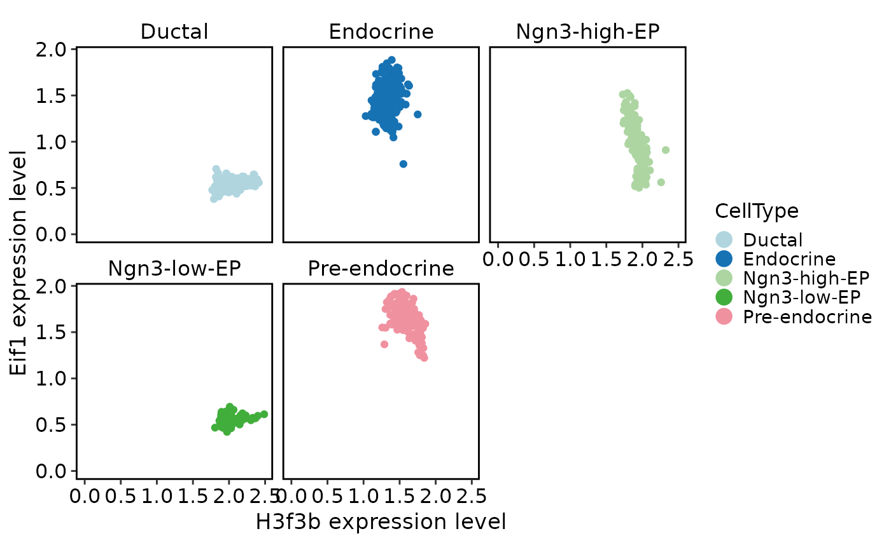
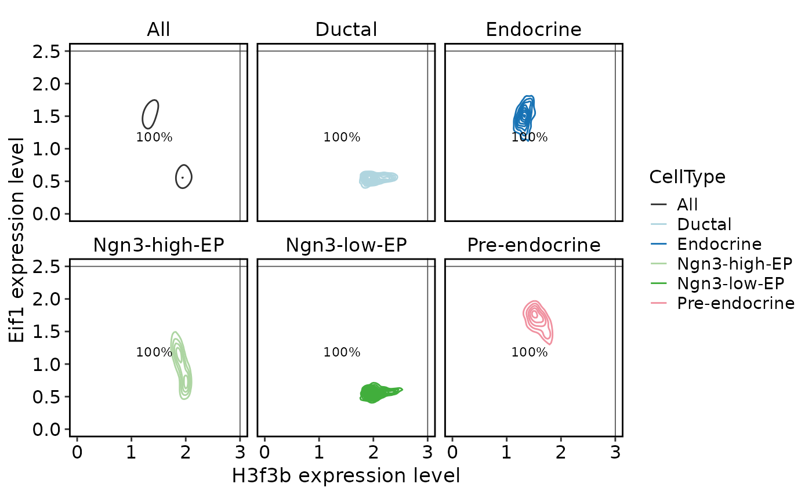
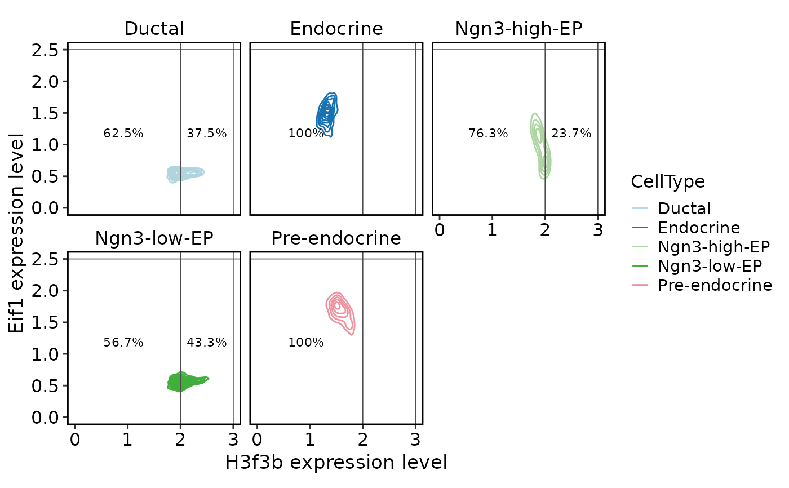
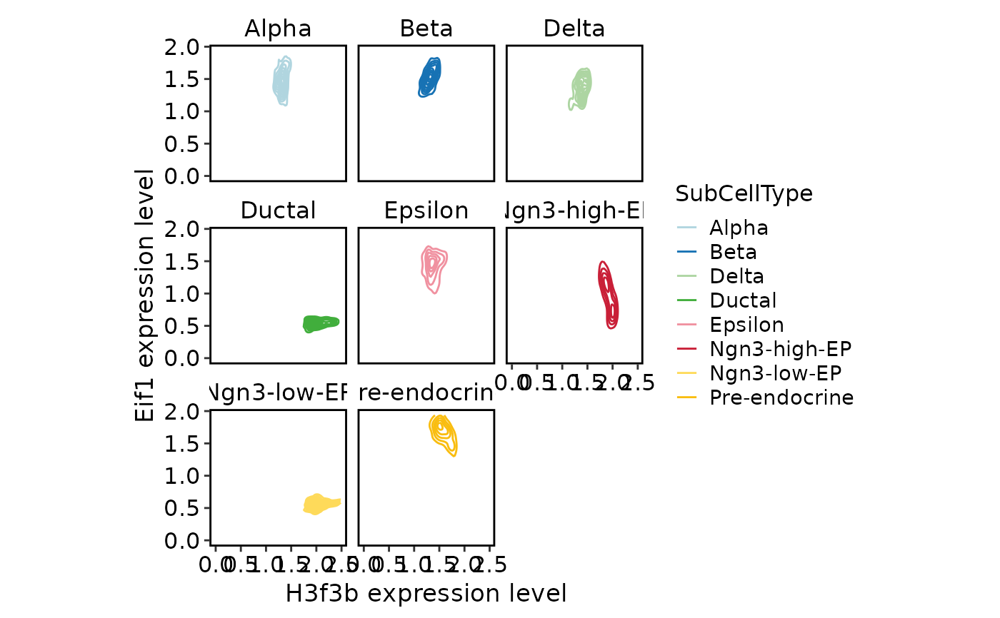

TACS is a method for plotting a FACS-like plot for two features based on sc-RNA-seq data. For each of two query features, 100 features with similar expression patterns are selected and ranked by their Pearson correlation with the query. In a process akin to compensation, the intersection of the feature lists is removed from each list. The log normalized expression of the resulting features are then averaged within each cell, and the resulting quantities are plotted.
Usage
TACSPlot(
object,
ref_srt = NULL,
assay = "RNA",
layer = "data",
group.by = NULL,
feature1,
feature2,
cutoffs = NULL,
density = FALSE,
palette = "Chinese",
num_features_add = 100,
features_predetermined = FALSE,
aggregator = "sum",
remove_outliers = FALSE,
aspect.ratio = 1,
title = NULL,
subtitle = NULL,
xlab = NULL,
ylab = NULL,
suffix = " expression level",
legend.position = "right",
legend.direction = "vertical",
theme_use = "theme_scop",
theme_args = list(),
include_all = FALSE,
all_color = "grey20",
quadrants_line_color = "grey30",
quadrants_line_type = "solid",
quadrants_line_width = 0.3,
quadrants_label_size = 3,
density_alpha = NULL,
bins = 20,
h = NULL,
nrow = NULL,
ncol = NULL,
verbose = TRUE,
...,
srt = NULL
)Arguments
- object
A
Seuratobject.- ref_srt
A Seurat object. If your dataset is perturbed in a way that would substantially alter feature-feature correlations, for example if different time points are present or certain cell types are mostly depleted, you can feed in a reference srt, and TACS will choose axes based on the reference data.
- assay
Which assay to use. Default is
"RNA".- layer
Assay layer to use.
- group.by
Metadata column(s) used to color cells.
- feature1
Horizontal axis on plot mimics this feature. Character, usually length 1 but possibly longer.
- feature2
Vertical axis on plot mimics this feature. Character, usually length 1 but possibly longer.
- cutoffs
If given, divide plot into four quadrants and annotate with percentages. Can be a numeric vector of length 1 or 2, or a list of two numeric vectors for x and y axes respectively.
- density
If
TRUE, plot contours instead of points.- palette
Color palette name.
- num_features_add
Each axis shows a simple sum of similar features. This is how many (before removing overlap).
- features_predetermined
If
FALSE, plot the sum of many features similar to feature1 instead of feature1 alone (same for feature2). See GetSimilarFeatures. IfTRUE, plot the sum of only the features given.- aggregator
How to combine correlations when finding similar features. Options:
"sum"(default),"min"(for "and"-like filter),"max", or"mean".- remove_outliers
If
TRUE, remove outliers from the plot. Default isFALSE.- aspect.ratio
Panel aspect ratio.
- title, subtitle, xlab, ylab
Plot labels.
- suffix
The suffix of the axis labels.
- legend.position
Legend placement (
"none","left","right","bottom","top"), direction, and title.legend.title = NULLuses the group name.- legend.direction
Legend direction:
"horizontal"or"vertical".- theme_use, theme_args
Theme name or function, plus extra theme arguments.
- include_all
If
TRUE, include a panel with all cells. Default isFALSE.- all_color
The color of the all cells panel.
- quadrants_line_color
The color of the quadrants lines.
- quadrants_line_type
The type of the quadrants lines.
- quadrants_line_width
The width of the quadrants lines.
- quadrants_label_size
The size of the quadrants labels.
- density_alpha
The alpha of the density plot.
- bins
Number of bins for density plot.
- h
Bandwidth for density plot.
- nrow
Combine plots with patchwork.
combine = FALSEreturns a list of ggplots.- ncol
Number of columns of the combined plot.
- verbose
Whether to print the message. Default is
TRUE.- ...
Additional parameters passed to ggplot2::stat_density2d.
- srt
Deprecated alias for
object; supply exactly one of the two. It will be removed in scop 1.0.0.
References
Kernfeld EM, Genga RMJ, Neherin K, et al. (2018). A Single-Cell Transcriptomic Atlas of Thymus Organogenesis Resolves Cell Types and Developmental Maturation. Immunity, 48(6), 1258-1270. doi:10.1016/j.immuni.2018.04.015
Examples
Restored example output generated on 2026-10-13 from SCOP 53ed7e08f. These historical examples have not been revalidated against the current release. Current usage and arguments are documented above.
data(pancreas_sub)
pancreas_sub <- RunStandardWorkflow(pancreas_sub)
#> ℹ [2026-10-13 17:28:49] Start standard processing workflow...
#> ℹ [2026-10-13 17:28:49] Checking a list of <Seurat>...
#> ! [2026-10-13 17:28:49] Data 1/1 of the `srt_list` is "unknown"
#> ℹ [2026-10-13 17:28:49] Perform `NormalizeData()` with `normalization.method = 'LogNormalize'` on 1/1 of `srt_list`...
#> ℹ [2026-10-13 17:28:49] Perform `FindVariableFeatures()` on 1/1 of `srt_list`...
#> ℹ [2026-10-13 17:28:50] Use the separate HVF from `srt_list`
#> ℹ [2026-10-13 17:28:50] Number of available HVF: 2000
#> ℹ [2026-10-13 17:28:50] Finished check
#> ℹ [2026-10-13 17:28:50] Perform `ScaleData()`
#> ℹ [2026-10-13 17:28:50] Perform pca linear dimension reduction
#> ℹ [2026-10-13 17:28:50] Use stored estimated dimensions 1:23 for Standardpca
#> ℹ [2026-10-13 17:28:50] Perform `Seurat::FindClusters()` with `cluster_algorithm = 'louvain'` and `cluster_resolution = 0.6`
#> ℹ [2026-10-13 17:28:51] Reorder clusters...
#> ℹ [2026-10-13 17:28:51] Skip `log1p()` because `layer = data` is not "counts"
#> ℹ [2026-10-13 17:28:51] Perform umap nonlinear dimension reduction
#> ✔ [2026-10-13 17:29:01] Standard processing workflow completed
TACSPlot(
pancreas_sub,
feature1 = "H3f3b",
feature2 = "Eif1",
group.by = "CellType"
)

TACSPlot(
pancreas_sub,
feature1 = "H3f3b",
feature2 = "Eif1",
group.by = "CellType",
density = TRUE,
include_all = TRUE,
cutoffs = c(3, 2.5)
)

TACSPlot(
pancreas_sub,
feature1 = "H3f3b",
feature2 = "Eif1",
group.by = "CellType",
density = TRUE,
cutoffs = list(x = c(2, 3), y = c(2.5))
)

TACSPlot(
pancreas_sub,
feature1 = "H3f3b",
feature2 = "Eif1",
group.by = "SubCellType",
density = TRUE
)
